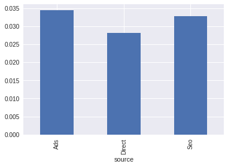

Analysis of Ads conversion
This paper explored and build a predictive model conversion. It walked thru the data to understand and identify market opportunities.
A few techniques are applied to deal with classification and unbalanced data, which is dicussed along the analysis.
We organized this work in:
- Exploratory Analysis
- Building Predictive Model
- Optimization
- Conclusion
# import modules
import pandas as pd
import numpy as np
import patsy
from sklearn.preprocessing import PolynomialFeatures, Normalizer,StandardScaler
from sklearn.pipeline import Pipeline
from sklearn.svm import SVC, LinearSVC
from sklearn.linear_model import LogisticRegressionCV, SGDClassifier
from sklearn.model_selection import train_test_split, RandomizedSearchCV
from sklearn.metrics import (accuracy_score, classification_report, f1_score,
confusion_matrix, roc_auc_score,roc_curve,auc)
from sklearn.ensemble import RandomForestClassifier
import xgboost
from sklearn.preprocessing import OneHotEncoder
from imblearn.over_sampling import SMOTE, ADASYN
# configure print precision and graphs
import matplotlib.pyplot as plt
import seaborn as sns
pd.options.display.precision = 4
%matplotlib inline
import sklearn.manifold as manifold
from sklearn.metrics import pairwise_distances
import sklearn.decomposition as decomposition
import os
path = '/hdd/data/collection-take-home-challenges/conversion_data.csv'
conv_dta = pd.read_csv(path)
country age new_user source total_pages_visited converted
UK 25 1 Ads 1 0
US 23 1 Seo 5 0
US 28 1 Seo 4 0
China 39 1 Seo 5 0
US 30 1 Seo 6 0
The table is "conversion_data". It has information about signed-in users
during one session. Each row is a user session.
Columns description:
- country: user country based on the IP address
- age: user age. Self-reported at sign-in step
- new_user : whether the user created the account during this session or had already an
account and simply came back to the site
- source: marketing channel source
- Ads: came to the site by clicking on an advertisement
- Seo: came to the site by clicking on search results
- Direct: came to the site by directly typing the URL on the browser
- total_pages_visited: number of total pages visited during the session. This is a proxy for
time spent on site and engagement during the session.
converted: this is our label. 1 means they converted within the session, 0 means they left
without buying anything. The company goal is to increase conversion rate: # conversions
/ total sessions.
|
age |
new_user |
total_pages_visited |
converted |
| count |
316200.0000 |
316200.0000 |
316200.0000 |
316200.0000 |
| mean |
30.5699 |
0.6855 |
4.8730 |
0.0323 |
| std |
8.2718 |
0.4643 |
3.3411 |
0.1767 |
| min |
17.0000 |
0.0000 |
1.0000 |
0.0000 |
| 25% |
24.0000 |
0.0000 |
2.0000 |
0.0000 |
| 50% |
30.0000 |
1.0000 |
4.0000 |
0.0000 |
| 75% |
36.0000 |
1.0000 |
7.0000 |
0.0000 |
| max |
123.0000 |
1.0000 |
29.0000 |
1.0000 |
<class 'pandas.core.frame.DataFrame'>
RangeIndex: 316200 entries, 0 to 316199
Data columns (total 6 columns):
country 316200 non-null object
age 316200 non-null int64
new_user 316200 non-null int64
source 316200 non-null object
total_pages_visited 316200 non-null int64
converted 316200 non-null int64
dtypes: int64(4), object(2)
memory usage: 14.5+ MB
There is no missing data. However, the maximum age of 123 years does not seems right.
Luckily, only two values are incorrect, so we can just delete them.
# Select unusual ages
conv_dta.ix[conv_dta.age > 79,:]
|
country |
age |
new_user |
source |
total_pages_visited |
converted |
| 90928 |
Germany |
123 |
0 |
Seo |
15 |
1 |
| 295581 |
UK |
111 |
0 |
Ads |
10 |
1 |
#Drop observation with unusual age
conv_dta.ix[conv_dta.age > 79,:] = np.nan
conv_dta.dropna(inplace=True)
conv_dta.describe()
|
age |
new_user |
total_pages_visited |
converted |
| count |
316198.0000 |
316198.0000 |
316198.0000 |
316198.0000 |
| mean |
30.5693 |
0.6855 |
4.8729 |
0.0323 |
| std |
8.2690 |
0.4643 |
3.3411 |
0.1767 |
| min |
17.0000 |
0.0000 |
1.0000 |
0.0000 |
| 25% |
24.0000 |
0.0000 |
2.0000 |
0.0000 |
| 50% |
30.0000 |
1.0000 |
4.0000 |
0.0000 |
| 75% |
36.0000 |
1.0000 |
7.0000 |
0.0000 |
| max |
79.0000 |
1.0000 |
29.0000 |
1.0000 |
Converted vs Not-Converted
Have a quick look at the statistics of the converted with not-converted.
Users that converted tend to be younger, definitely visit more pages, and are not new users.
The first graph shows that the website does better with users under 30 years old. However, the histogram show that most user have age between 20 and 40 years. I may suggest that the population between 30 and 40 may represent a market opportunity.
Surprisily, the is a spike of convertion around user at the age 60, which probabily does not mean anything because there are very few user older then 50 years old.
conv_dta.ix[conv_dta.converted==1,:].describe(percentiles=[])
|
age |
new_user |
total_pages_visited |
converted |
| count |
10198.0000 |
10198.0000 |
10198.0000 |
10198.0 |
| mean |
26.5290 |
0.2980 |
14.5539 |
1.0 |
| std |
6.9373 |
0.4574 |
3.9635 |
0.0 |
| min |
17.0000 |
0.0000 |
2.0000 |
1.0 |
| 50% |
25.0000 |
0.0000 |
14.0000 |
1.0 |
| max |
61.0000 |
1.0000 |
29.0000 |
1.0 |
conv_dta.ix[conv_dta.converted==0,:].describe(percentiles=[])
|
age |
new_user |
total_pages_visited |
converted |
| count |
306000.0000 |
306000.0000 |
306000.0000 |
306000.0 |
| mean |
30.7040 |
0.6984 |
4.5503 |
0.0 |
| std |
8.2758 |
0.4590 |
2.7899 |
0.0 |
| min |
17.0000 |
0.0000 |
1.0000 |
0.0 |
| 50% |
30.0000 |
1.0000 |
4.0000 |
0.0 |
| max |
79.0000 |
1.0000 |
20.0000 |
0.0 |
(conv_dta.ix[:,['age','converted']]
.groupby(['age']).mean()
.plot(title='Converted Rate by Age', figsize=(9,6),legend=False)
);
(conv_dta.ix[:,['age']]
.plot(kind='hist', bins=30, title='Number of User by Age',
figsize=(9,6), legend=False)
);
(conv_dta.ix[:,['total_pages_visited','converted']]
.groupby(['total_pages_visited'],as_index=False)
.mean()
.plot(kind='scatter', x='total_pages_visited', y='converted',
title='Conversion Rate vs Total of Pages Visited',
figsize=(9,6), legend=False,
s = conv_dta.ix[:,['total_pages_visited','converted']]
.groupby(['total_pages_visited'],as_index=False)
.agg(lambda x: x.size/50)
)
);
Take a look at the categorical variables. It is clear that
countries has different performances, but sources do not.
(conv_dta.ix[:,['new_user','source','converted']]
.groupby(['new_user','source'])
.mean()
)
|
|
converted |
| new_user |
source |
|
| 0.0 |
Ads |
0.0783 |
| Direct |
0.0612 |
| Seo |
0.0734 |
| 1.0 |
Ads |
0.0144 |
| Direct |
0.0131 |
| Seo |
0.0142 |
(conv_dta.ix[:,['country','source','converted']]
.groupby(['country','source'])
.mean()
)
|
|
converted |
| country |
source |
|
| China |
Ads |
0.0015 |
| Direct |
0.0014 |
| Seo |
0.0012 |
| Germany |
Ads |
0.0668 |
| Direct |
0.0534 |
| Seo |
0.0639 |
| UK |
Ads |
0.0556 |
| Direct |
0.0463 |
| Seo |
0.0539 |
| US |
Ads |
0.0406 |
| Direct |
0.0329 |
| Seo |
0.0385 |
# barplot for categorical variables
(conv_dta.ix[:,['country','converted']]
.groupby(['country'])
.agg([np.mean])
.plot(kind='bar')
)
(conv_dta.ix[:,['country','converted']]
.groupby(['country'])
.agg([lambda x: x.size])
.plot(kind='bar', legend=False)
);
(conv_dta.ix[:,['source','converted']]
.groupby(['source'])
.agg([np.mean])
.plot(y='converted', kind='bar',legend=False)
);

# deconde string entries to numeric entries in order to run model.
old = conv_dta.country.drop_duplicates().values
conv_dta.country.replace(old, np.arange(old.size), inplace=True)
old = conv_dta.source.drop_duplicates().values
conv_dta.source.replace(old, np.arange(old.size), inplace=True)
|
country |
age |
new_user |
source |
total_pages_visited |
converted |
| 0 |
0 |
25.0 |
1.0 |
0 |
1.0 |
0.0 |
| 1 |
1 |
23.0 |
1.0 |
1 |
5.0 |
0.0 |
| 2 |
1 |
28.0 |
1.0 |
1 |
4.0 |
0.0 |
| 3 |
2 |
39.0 |
1.0 |
1 |
5.0 |
0.0 |
| 4 |
1 |
30.0 |
1.0 |
1 |
6.0 |
0.0 |
Building a Predictive Model
The feature total_pages_visited is the most important feature and, also the most unlikely to change. Therefore, we would like to exclude this feature, then focus on what we can change. However, the quality of the predictive model without it, is very poor.
dum = OneHotEncoder(categorical_features=[0,3])
d = dum.fit_transform(conv_dta.ix[:,:4])
dum.transform(conv_dta).toarray().shape
formula = 'total_pages_visited + C(country) + age + new_user + C(source)'
X = patsy.dmatrix(formula_like=formula, data=conv_dta,
return_type="dataframe", NA_action='raise')
y = conv_dta.converted.values
(X_train,
X_test,
y_train,
y_test) = train_test_split(X.values, y, test_size=0.33, random_state=41)
X.shape
Imbalanced Classes
See below that the dataset has a very imbalanced classes. The number of converted observations consist of one %3.22 of the dataset. Since, it is hightly inbalanced a random bootstrap oversampling of the minoriy will not be very suceful, in fact it is likely to overfit the minory.
Using SMOTE - Synthetic Minority
Over-sampling Technique - to avoid overfiting the minory class.
print('Total: %10d' % y_train.size)
print('Converted 0: %10d (%%%4.2f)' % ((y_train==0).sum(), 100*(y_train==0).mean()))
print('Converted 1: %10d (%%%4.2f)' % ((y_train==1).sum(), 100*(y_train==1).mean()))
Total: 211852
Converted 0: 205030 (%96.78)
Converted 1: 6822 (%3.22)
sm = SMOTE(kind='regular',n_jobs=8,k_neighbors=9,m_neighbors=12)
X_train,y_train= sm.fit_sample(X_train,y_train)
sm = ADASYN(n_jobs=8)
X_train,y_train= sm.fit_sample(X_train,y_train)
We will choose the random forest, since it is efficient, not too sensitive to unbalanced data, and gives good insight about the feature importance.
rfc = RandomForestClassifier(n_jobs=8,
max_features= 7,
min_samples_leaf=8,
bootstrap=False,
n_estimators= 200,
max_depth=5,
criterion='entropy',
min_samples_split= 7
)
rfc.fit(X_train, y_train);
y_hat_train = rfc.predict(X_train)
y_hat_test = rfc.predict(X_test)
print('In sample:\n', classification_report(y_train, y_hat_train))
print('\nOut of sample:\n',classification_report(y_test, y_hat_test))
m_in = confusion_matrix(y_train, y_hat_train)
m_out = confusion_matrix(y_test, y_hat_test)
print('\nIn sample:\n', m_in)
print('\nOut of sample:\n',m_out,'\n\n')
print('\nIn sample:')
print('Error class 0: %4.4f, Error class 1: %4.4f' % \
tuple((m_in[[0,1],[1,0]]/m_in.T.sum(axis=0)).tolist()))
print('\nOut of sample:')
print('Error class 0: %4.4f, Error class 1: %4.4f' % \
tuple((m_out[[0,1],[1,0]]/m_out.T.sum(axis=0)).tolist()))
plt.figure(1)
y_pred_prob = rfc.predict_proba(X_test)[:, 1]
fpr_grd, tpr_grd, _ = roc_curve(y_test, y_pred_prob)
plt.plot(fpr_grd,tpr_grd)
fpr_grd, tpr_grd, _ = roc_curve(y_test, y_hat_test)
print(fpr_grd,tpr_grd)
print(1-fpr_grd,1-tpr_grd)
auc(fpr_grd,tpr_grd)
In sample:
precision recall f1-score support
0.0 0.98 0.92 0.95 205030
1.0 0.93 0.98 0.95 205030
avg / total 0.95 0.95 0.95 410060
Out of sample:
precision recall f1-score support
0.0 1.00 0.92 0.96 100970
1.0 0.29 0.95 0.44 3376
avg / total 0.98 0.92 0.94 104346
In sample:
[[189295 15735]
[ 4646 200384]]
Out of sample:
[[93031 7939]
[ 177 3199]]
In sample:
Error class 0: 0.0767, Error class 1: 0.0227
Out of sample:
Error class 0: 0.0786, Error class 1: 0.0524
[ 0. 0.07862732 1. ] [ 0. 0.94757109 1. ]
[ 1. 0.92137268 0. ] [ 1. 0.05242891 0. ]
0.93447188750166055
import numpy as np
from scipy.stats import randint as sp_randint
# Utility function to report best scores
def report(results, n_top=5):
for i in range(1, n_top + 1):
candidates = np.flatnonzero(results['rank_test_score'] == i)
for candidate in candidates:
print("Model with rank: {0}".format(i))
print("Mean validation score: {0:.3f} (std: {1:.3f})".format(
results['mean_test_score'][candidate],
results['std_test_score'][candidate]))
print("Parameters: {0}".format(results['params'][candidate]))
print("")
# specify parameters and distributions to sample from
param_dist = {"n_estimators": sp_randint(500, 8000),
"max_depth": [3,4,5,8,9, None],
"max_features": sp_randint(1, 9),
"min_samples_split": sp_randint(2, 9),
"min_samples_leaf": sp_randint(1, 10),
"bootstrap": [True, False],
}
# run randomized search
random_search = RandomizedSearchCV(rfc,
param_distributions=param_dist,
n_iter=5,
scoring='roc_auc',
cv=5)
random_search.fit(X_train, y_train)
print(report(random_search.cv_results_))
mask = np.random.choice(np.arange(y_train.size),30000)
# = pairwise_distances(X_train[mask,:],n_jobs=4)
tsne = manifold.TSNE(n_iter=1000,
learning_rate=500,
init='pca',
perplexity=35.0)
x =tsne.fit_transform(X_train[mask,:])
plt.figure(figsize=(12,10))
plt.scatter(x[:,0],x[:,1], c=y_train[mask],marker='+')
mask = rfc.feature_importances_.argsort()[::-1]
df = pd.DataFrame({'features': X.columns.values[mask],
'importance': rfc.feature_importances_[mask]})
df = (df
.replace(to_replace=[r'C\(country\)\[.+\]',
r'C\(source\)\[.+\]',
r'C\(country \* source\)\[.+\]' ],
value=['country','source','country*source'], regex=True)
.groupby('features', as_index=False)
.sum()
.sort_values('importance', ascending=False)
)
df
df.plot(x='features', y='importance', kind='bar')
mask = rfc.feature_importances_.argsort()[::-1]
df = pd.DataFrame({'features': X.columns.values[mask],
'importance': rfc.feature_importances_[mask]})
df = (df.replace(to_replace=[r'C\(country\)\[.+\]', r'C\(source\)\[.+\]' ],
value=['country','source'], regex=True)
.groupby('features', as_index=False)
.sum()
.sort_values('importance', ascending=False)
)
df
df.plot(x='features', y='importance', kind='bar')
Conclusion
- The site is not doing well in China. I would recommend a further study.
- Things are doing well in Germany, which may represent a great market opportunity, since there are just a few number of users from this country.
- The site is doing well with young people.
- Old users are more likely to purchase an item. We should promote more engagement, but direct ads do not seem to be the most effective.
- The bootstrap technique definitely helped to improve the performance of the model.
xg = xgboost.XGBClassifier(n_estimators=8000,
nthread=8,
learning_rate=0.01)
sgdc = SGDClassifier(n_jobs=8, n_iter=100)
norm = StandardScaler()
clf = SGDClassifier(n_jobs=8)
clf = LogisticRegressionCV(cv=3,n_jobs=8,Cs=50)
rfc = Pipeline([('clf',clf)])
rfc.fit(X_train, y_train);
y_hat_train = rfc.predict(X_train)
y_hat_test = rfc.predict(X_test)
print('In sample:\n', classification_report(y_train, y_hat_train))
print('\nOut of sample:\n',classification_report(y_test, y_hat_test))
m_in = confusion_matrix(y_train, y_hat_train)
m_out = confusion_matrix(y_test, y_hat_test)
print('\nIn sample:\n', m_in)
print('\nOut of sample:\n',m_out,'\n\n')
print('\nIn sample:')
print('Error class 0: %4.4f, Error class 1: %4.4f' % \
tuple((m_in[[0,1],[1,0]]/m_in.T.sum(axis=0)).tolist()))
print('\nOut of sample:')
print('Error class 0: %4.4f, Error class 1: %4.4f' % \
tuple((m_out[[0,1],[1,0]]/m_out.T.sum(axis=0)).tolist()))
plt.figure(1)
y_pred_prob = rfc.predict_proba(X_test)[:, 1]
fpr_grd, tpr_grd, _ = roc_curve(y_test, y_pred_prob)
plt.plot(fpr_grd,tpr_grd)
fpr_grd, tpr_grd, _ = roc_curve(y_test, y_hat_test)
print(fpr_grd,tpr_grd)
print(1-fpr_grd,1-tpr_grd)
auc(fpr_grd,tpr_grd)
In sample:
precision recall f1-score support
0.0 0.94 0.94 0.94 205030
1.0 0.94 0.94 0.94 205030
avg / total 0.94 0.94 0.94 410060
Out of sample:
precision recall f1-score support
0.0 1.00 0.94 0.97 100970
1.0 0.35 0.94 0.51 3376
avg / total 0.98 0.94 0.95 104346
In sample:
[[193325 11705]
[ 11855 193175]]
Out of sample:
[[95095 5875]
[ 214 3162]]
In sample:
Error class 0: 0.0571, Error class 1: 0.0578
Out of sample:
Error class 0: 0.0582, Error class 1: 0.0634
[ 0. 0.0581856 1. ] [ 0. 0.93661137 1. ]
[ 1. 0.9418144 0. ] [ 1. 0.06338863 0. ]
0.93921288736225439
There are comments